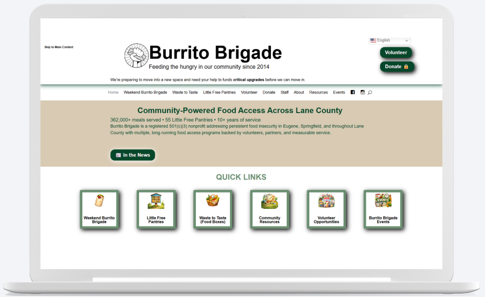

Design Highlights

Burrito Brigade is a nonprofit organization dedicated to providing meals to those in need while supporting local food communities. They needed a website that communicates their mission clearly and makes it easy for volunteers and donors to engage.
Redesigning a nonprofit website for clarity, accessibility, and engagement.
Identify goals, audience, and challenges.
Information architecture, and visual branding.
Build an accessible, responsive site.
Check accessibility and functionality.
Go live and track results.
Interested in a website redesign that’s accessible, engaging, and built for results? Get in touch to start your project.